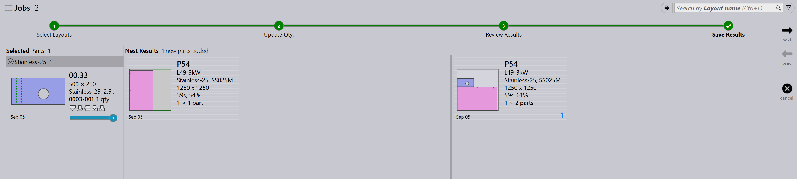
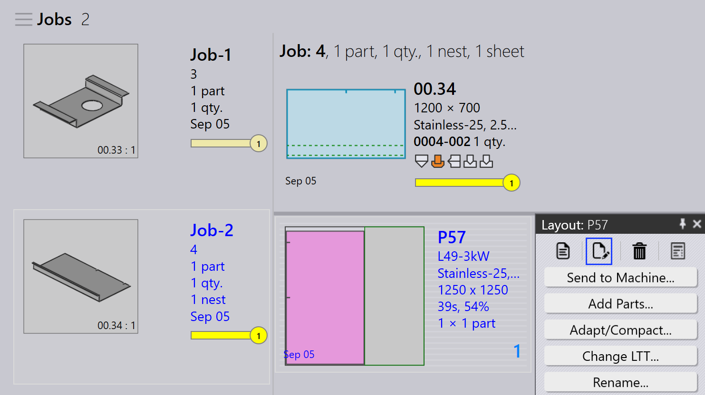

Επανασυσκευασία
Το TruSmartCAM δεν έχει ξεχωριστή ενότητα Επανασυσκευασίας. Αντίθετα, η επανασυσκευασία διαχειρίζεται μέσω επιλογών σε επίπεδο εργασίας που δίνουν ευελιξία στον τρόπο συνδυασμού των εξαρτημάτων.
Υπάρχουν τρεις τρόποι με τους οποίους μπορεί να γίνει η επανασυσκευασία.
-
Επανασυσκευασία με Μείξη εξαρτημάτων από πολλαπλές εργασίες.
-
Χειροκίνητη Επανασυσκευασία Χρησιμοποιώντας τον Οδηγό Προσθήκη εξαρτημάτων… Interactive.
-
Χειροκίνητη Επανασυσκευασία Χρησιμοποιώντας το TecZone.
Επανασυσκευασία με Μείξη εξαρτημάτων από πολλαπλές εργασίες
-
Για να ενεργοποιήσετε αυτήν την επιλογή πηγαίνετε στο εργοστασιακές → ρυθμίσεις → Εργασία → Ρυθμίσεις κατανομής → Μείξη εξαρτημάτων από πολλαπλές εργασίες.

-
Όταν ενεργοποιηθεί, αυτή η επιλογή επιτρέπει στα εξαρτήματα από διαφορετικές εργασίες να ομαδοποιηθούν μαζί κατά την αυτόματη τοποθέτηση ή τη διαδραστική τοποθέτηση, με αποτέλεσμα μια συνδυασμένη συσκευασία ή τοποθέτηση.
-
Για παράδειγμα:
-
Η Job-1 έχει 1 εξάρτημα, η Job-2 έχει 1 εξάρτημα.
-
Με την Μείξη εξαρτημάτων από πολλαπλές εργασίες ενεργοποιημένη, το TruSmartCAM μπορεί να επανασυσκευάσει αυτά τα 2 εξαρτήματα σε μια μεμονωμένη βελτιστοποιημένη τοποθέτηση.
-


-
Χωρίς αυτήν την επιλογή, τα εξαρτήματα από κάθε εργασία παραμένουν χωριστά κατά την τοποθέτηση/συσκευασία με διαφορετικά ονόματα διάταξης.
-
Η επανασυσκευασία μπορεί επίσης να εκτελεστεί χειροκίνητα χωρίς να ενεργοποιηθεί αυτή η επιλογή.
Χειροκίνητη επανασυσκευασία χρησιμοποιώντας τον οδηγό προσθήκης εξαρτημάτων interactive
-
Από την προβολή διάταξης, επιλέξτε τα εξαρτήματα που θέλετε να επανασυσκευάσετε.
-
Κάντε δεξί κλικ στο εξάρτημα και επιλέξτε Προσθήκη εξαρτημάτων… από τον πίνακα διάταξης.

-
Ακολουθήστε τις προτροπές στον οδηγό για να ολοκληρώσετε τη διαδικασία επανασυσκευασίας.
-
Επιλέξτε Προβολή άλλων εξαρτημάτων εργασίας και προσθέστε τα στην τρέχουσα εργασία.

-
Ελέγξτε τις αλλαγές και επιβεβαιώστε την επανασυσκευασία.

Για περισσότερες λεπτομέρειες δείτε Add Parts.
Χειροκίνητη επανασυσκευασία χρησιμοποιώντας το TecZone
-
Ανοίξτε το TecZone κάνοντας κλικ στο
 .
.

-
Στη διεπαφή TecZone, κάντε κλικ στο Add.

-
Εμφανίζεται ένα νέο παράθυρο όπου μπορείτε να επιλέξετε τα εξαρτήματα που θα επανασυσκευαστούν. Κάντε κλικ στο Προβολή… και στη συνέχεια επιλέξτε Άλλα εξαρτήματα εργασίας. Αφού κάνετε την επιλογή σας, κάντε κλικ στο _Επιλογή.

-
Εμφανίζεται ένα νέο παράθυρο όπου μπορείτε να ορίσετε, πού πρέπει να επανασυσκευαστεί το εξάρτημα.

-
Κάντε κλικ στο Αποθηκεύστε τις αλλαγές στο Praxis και η επανασυσκευασμένη διάταξη θα είναι διαθέσιμη στο TruSmartCAM.